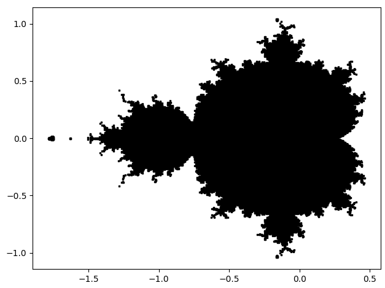
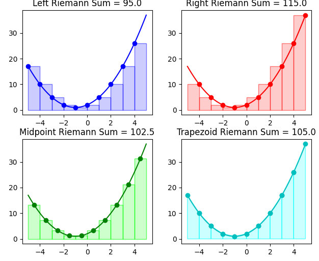
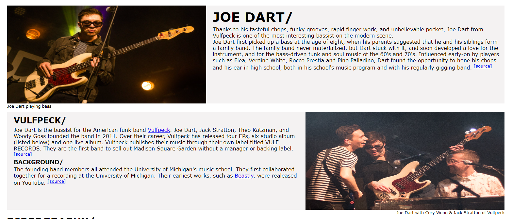
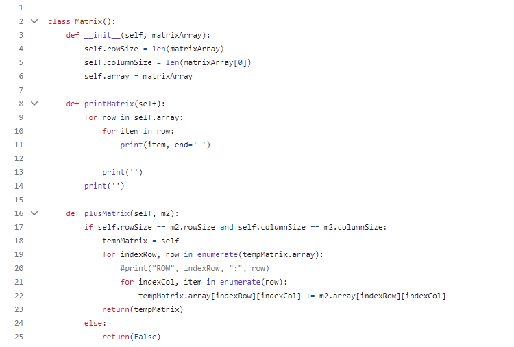
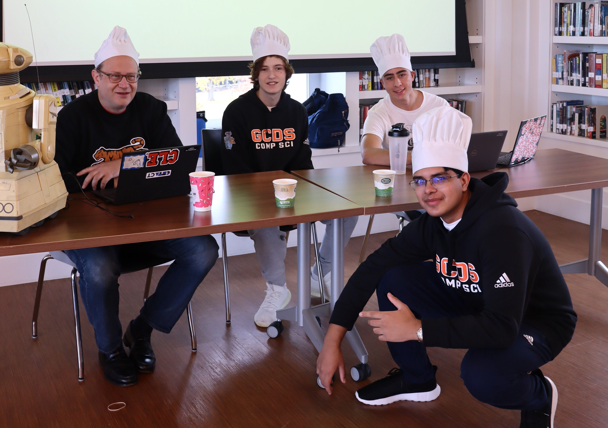
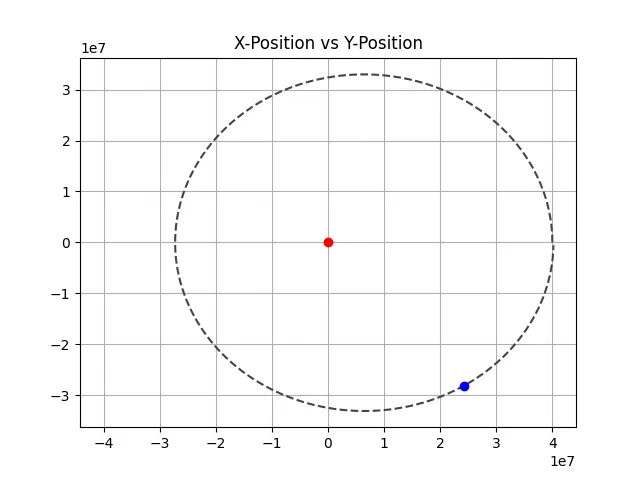

<!-- FlowerBox:
    Author: Andy Pauley
    Description: Personal Portfolio Page created for  CS-III assignment
    Date: Worked on from 10/15 to 11/15
    Bugs: Weird sizing when browser is shrunk, text goes over container box when window is too small. Elements overlap when window is to small
    Challenges: Multiple Pages, Parallax Scrolling Background, Hero-image top of page, created my own custom background. Played with aesthetics, Functional sticky top nav bar
    Sources: Consulted w3schools for HTML and CSS assistance, see google doc for sources.
--> 


<html>
<head>
    <!--imports style sheet and sets title of page-->
    <link rel="stylesheet" href="portfolioStyles.css">
    <title>Andy Pauley</title>
</head>
</html>
<body>
    <div id="navbar">
        <!--Sets up navbar with links to other html pages-->
        <a href="portfoliohomePage.html">Home</a>
        <a class="split" href="portfoliocontactPage.html">Contact</a>
        <a class="split" href="portfolioaboutPage.html">About</a>
        <a class="active split" href="portfolioprojectsPage.html">Projects</a>
    </div>
    <br>
    <br>
    <br>
    <h3>PROJECTS/</h3>
     <!--four column div-->
    <div class="row" style="margin-left: 3%; margin-right: 3%;">
        <div class="portcol" style="padding-left: 0px;">
            <!--content housed inside div-->
            <div class="portcontent" style="padding: 2%;">
                
                <h3 style="margin-left: 0%;">Fractal Calculus Project</h3>
                <p>For my final project in Calculus, I explored the complex plane and fractals. I created a python code that uses MatPlotLib to graph the Mandelbrot set (Pictued above) and all the Julia sets. The code allows the user to enter in the specific Julia set they want to graph, and how definite the result image will be.</p>
                <p>Github Repository Link:</p>
                <a href="https://github.com/andyp714/Honors-Calc-Fractal-Project" target="_blank">Calculus Fractal Project</a>
            </div>
        </div>
        <div class="portcol">
            <div class="portcontent" style="padding: 2%;">
                
                <h3 style="margin-left: 0%;">Riemann Sum Visualization</h3>
                <p>For a project in my CS-X class, I used python and MatPlotLib to calculate then visualize Riemann sums as shown above. The code calculates and shows the left, right,  midpoint, and trapezoidal Riemann sum. The user inputs a polynomial function, start & end interval, and number of subdivisions.</p>
                <p>Github Repository Link:</p>
                <a href="https://github.com/andyp714/CS-X-Riemann-Project" target="_blank">Riemann Sum Visualization</a>
            </div>
        </div>
        <div class="portcol">
            <div class="portcontent" style="padding: 2%;">
                
                <h3 style="margin-left: 0%;">Artist Wikipage Project</h3>
                <p>For a project in my CS-3 Web Design class, I created a wiki web page for a musician I am a fan of. I used HTML and CSS to make this web page, which is shown above. I included information about their music and band, as well as a table showing their discography with links to their works on spotify.</p>
                <p>Github Repository Link:</p>
                <a href="https://github.com/andyp714/CSIII-Wiki-Project" target="_blank">Wikipage Project</a>
            </div>
        </div>
        <div class="portcol">
            <div class="portcontent" style="padding: 2%;">
                
                <h3 style="margin-left: 0%;">Matrix Operations Project</h3>
                <p>For this project, I used python to create a Matrix object class with matrix functions. I coded several matrix operations without using any libraries. I created functions for multiplication, addition, finding the determinant, row reduction, and finding the inverse. The user can input several matrices of any size.</p>
                <p>Github Repository Link:</p>
                <a href="https://github.com/andyp714/CS-X-Matrix-Project" target="_blank">Matrix Operations Project</a>
            </div>
        </div>
    </div>
    <br>
    <!--two column div split 50 50-->
    <div class="row" style="margin-left: 3%; margin-right: 3%; width: 94%;">
        <div class="portcol" style="padding-left: 0px; width: 50%;">
            <div class="portcontent">
                
                
                <h3 style="margin-left: 0%;">TigerHacks</h3>
                <p>Our CS Team has competed in various coding competitions throughout the years and noticed the sense of community they have fostered. We have also noticed that, although many schools in our area have computer science departments, we don’t interact with them much. In contrast, our math team and athletics teams compete with other schools in our local area. As such we were inspired to create a coding competition for schools in Fairfield and Westchester County.</p>
                <p>Our team developed coding questions, created a website to advertise the competition, and organized/administered the event. We were thrilled to have over 40 students from six different schools compete in the first inaugural TigerHacks. More information can be found in the link below.</p>
                <a href="https://sites.google.com/gcds.net/tigerhacks/about" target="_blank"><p>Official TigerHacks Website</p></a>
            </div>
        </div>
        <div class="portcol" style="padding-left: 0px; width: 50%;">
            <div class="portcontent">
                
                <!--Embedded gif-->
                
                <h3 style="margin-left: 0%;">Orbit Visualization Project</h3>
                <p>For this project, I used python and MatPlotLib to create a visual two-dimensional orbit simulation. Shown above in the image and gif is the moon's orbit around the earth. I used physics and calculus to calculate the acceleration and velocity of the orbiting body at each time increment. The user inputs the mass of the host planet, the initial y-velocity of the orbiting planet, and the initial x-distance of the orbiting planet from its host. The user also inputs the time increment in seconds between each calculation, and how many lines of data they want calculated. The code then creates an animated graph of the data as shown above.</p>
                <p>Github Repository Link:</p>
                <a href="https://github.com/andyp714/CS-X-Orbit-Project" target="_blank">Orbit Visualization Project</a>
            </div>
        </div>
    </div>
    <br>
    <br>
</body>
<!--Footer at bottom of page-->
<footer>
    <p>Thank you for visiting my website!</p>
    <p>Email me at</p>
    <p>andypauley05@gmail.com</p>
</footer>